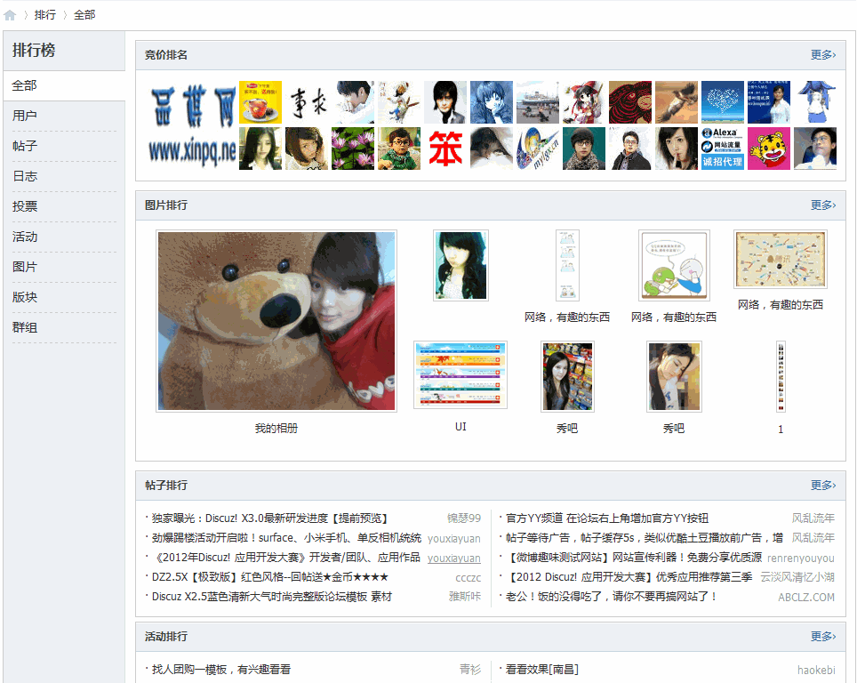
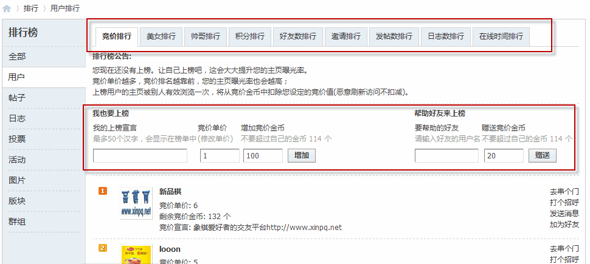
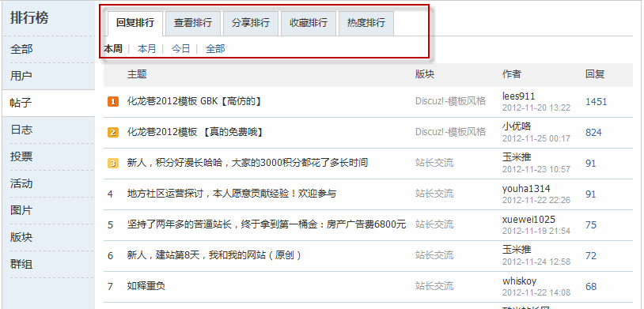
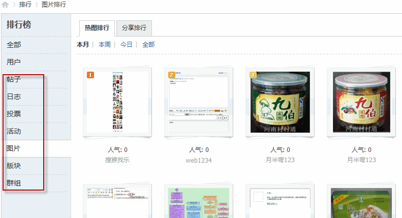

排行榜
排行榜集中展现了社区的精华内容，包括热门帖子、活跃用户、热门日志、热门投票、热门活动、精彩图片、精华版块和精华群组；另外，还在排行榜中引入“竞价 排名”机制，有效促进用户活跃度。 一个社区可能拥有大量的注册会员，但活跃会员可能只占有小部分比例，而这部分活跃用户却是社区主要内容的产生者与互动者，是社区的精华用户。排行榜功能帮助社区拥有更多的活跃用户，就意味着使社区更有活力。
排行榜需要在 后台 => 全局 => 排行榜设置 下开启，并设置排行榜的相关指数。因为排行榜调用的是全站数据，会占用比较多的资源，因此建议站长根据自己站点的情况来灵活设置排行榜的缓存时间。完成后显示如下图：
用户排行能够增强会员积极性，引导用户消费积分。在排行榜 => 用户排行列表中，分列竞价排行、美女排行、帅哥排行、积分排行、好友数排行、发帖数排行与日志数排行，能调动会员的积极性。站长可以引导会员获取积分、主动发帖，争取上榜，也可以鼓励会员消费积分加入竞价排名。
越是大型、专业社区，精华的内容越容易沉淀而不易查找，排行榜将最热门、回复最高、查看最多、分享和收藏最多的帖子展示出来，方便用户寻找有价值的精华内容，也能吸引新用户关注社区。
图片往往可以吸引人的眼球，站长可以在社区内多放一些图片，借图片排行来吸引会员眼球和点击；站长也可以鼓励会员多发图片，争取“上榜”机会，从而为社区增加人气。除了图片排行外，还有日志排行、群组排行、活动排行和版块排行，这些都能展示社区精华内容以及促进用户活跃度。
